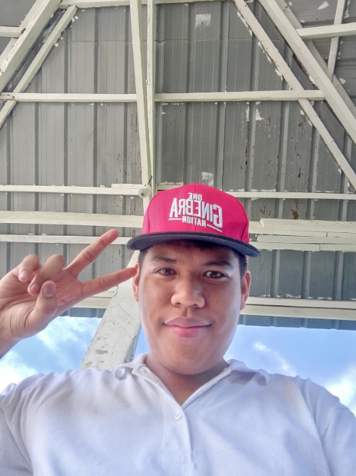

‎<!DOCTYPE html>
‎ <html lang="en">
‎ <head>
‎     <meta charset="UTF-8">
‎     <meta name="viewport" content="withd=device-width, initial-scale=1.0">
‎     <title>My Mini Website</title>
‎ </head>
‎ <body>
‎
‎     <nav>
‎         <a href="index.html">Home</a>
‎         <a href="about.html">About</a>
‎         <a href="contact.html">Contact</a>
‎
</nav>
‎     
  <p>Im Happy</p>
  <br>
  
  <p>Link</p>
  <a href="https://github.com/dolinofranzfrederick-max" target=_blank">GitHub Account</a>
  <br>
  <a href="https://github.com/AndradeAndrade20250483" target="_blank">GitHub Account</a>
  <br>
  <video width="350" height="350" controls>
    <source src="vid.mp4" type="video/mp4">
  </video>
    <audio controls>
      <source src="" type="audio/mp3">
    </audio>

  
  <footer>This project made by Andrade, Andrade and Dolino, Franz Frederick as a partner</footer>
  
</body>
</html>